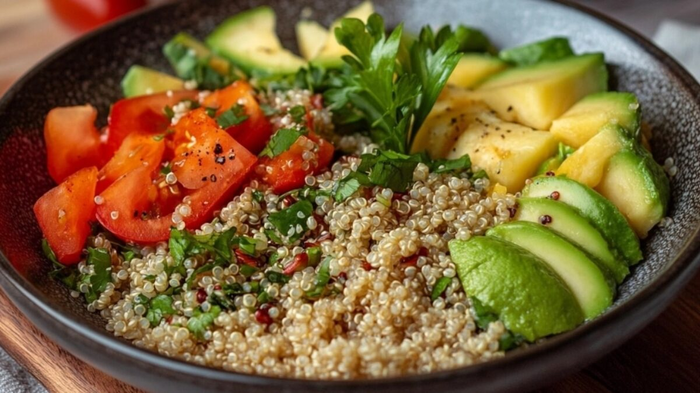

Pasta Cremosa con Ajo
Dificultad: Media
Tiempo: 30 min
Vegetariano

Brownies de Chocolate
Dificultad: Baja
Tiempo: 20 min
Sin gluten

 healthychef
healthychef
Ensalada de Quinoa y Aguacate
Dificultad: Baja
Tiempo: 15 min
Healthy